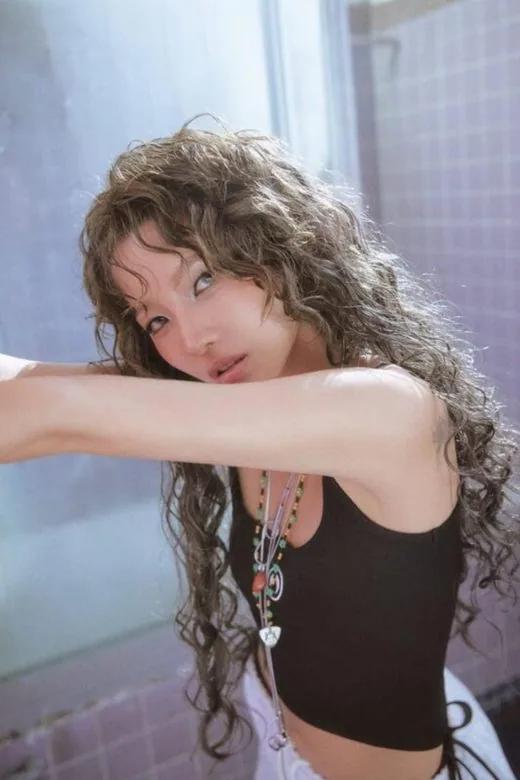
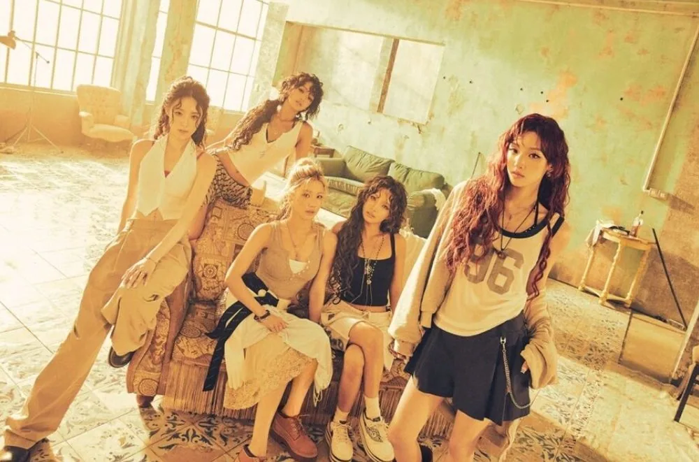
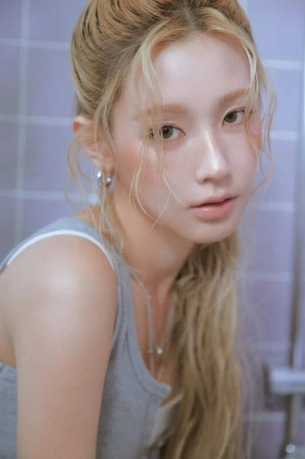
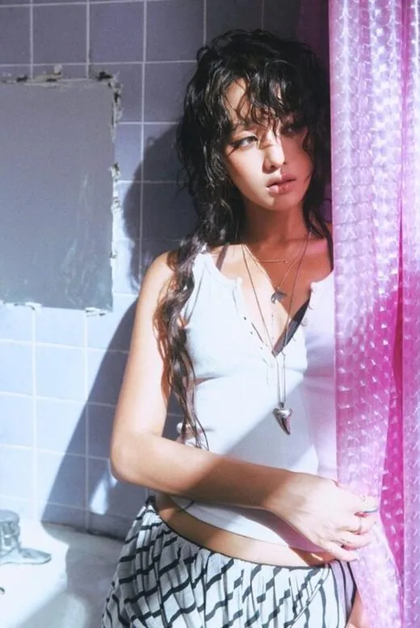
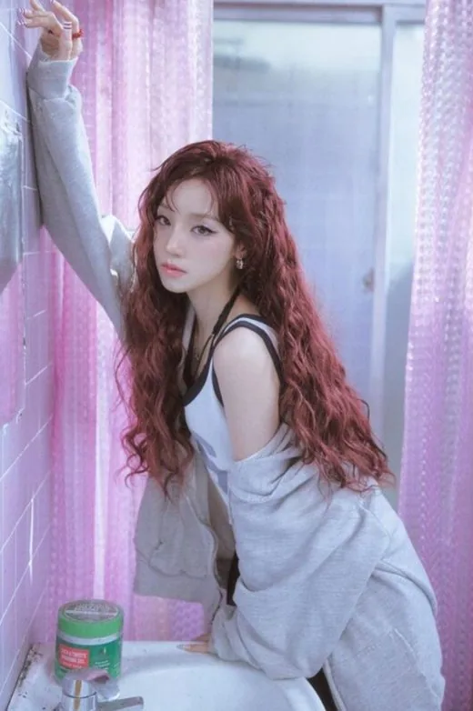
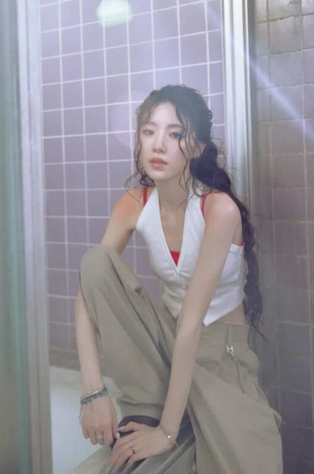

Soyeon
Soyeon (소연) · Leader, Rappeuse principale, Sous-vocaliste, Center · Coréenne

K-POP
Découvre i-dle et les profils de ses membres sur IBASE Asian Pop.
Ouvrir la fiche interactiveHistoire : i-dle (아이들), anciennement (G)I-DLE, a débuté à 6 membres. Soojin a quitté le groupe le 14 août 2021, et le groupe est resté à 5. Le 2 mai 2025, pour son 7e anniversaire, il a adopté le nom « i-dle ». Soyeon écrit et compose la plupart des chansons. Le 1er juin 2024, CUBE a annoncé que Soyeon suspendait ses activités pour raisons de santé. Source : KProfiles.
Débuts : 2 mai 2018 avec le mini-album « I Am » (à 6 membres)
Agence : CUBE Entertainment (88rising pour la promotion internationale)

Soyeon (소연) · Leader, Rappeuse principale, Sous-vocaliste, Center · Coréenne

Miyeon (미연) · Vocaliste principale · Coréenne

Minnie (민니) · Vocaliste principale · Thaïlandaise

Yuqi (우기) · Danseuse principale, Sous-vocaliste, Sous-rappeuse, Face of the Group · Chinoise

Shuhua (슈화) · Sous-vocaliste, Visual, Maknae · Taïwanaise
Soojin (수진) · Danseuse principale, Rappeuse, Vocaliste (ancienne membre : a quitté (G)I-DLE le 14 août 2021, après des accusations de harcèlement scolaire) · Coréenne